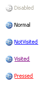

KryptonLinkLabel
Use the KryptonLinkLabel control when you need to display a hyper link in conjunction with the styling features of the Krypton Toolkit. This control allows the user to initiate an action by pressing the hyper link in order to generate a LinkClicked event. The content of the control is contained in the Values property. You can define Text, ExtraText and Image details within the Values property.
Appearance
The LabelStyle property is used to define the top level styling required for the appearance of the KryptonLinkLabel control. The four standard values are NormalControl, TitleControl, NormalPanel and TitlePanel. It is important to understand when to use which style in order to get the correct appearance when switching to different palettes.
When using a label that is positioned with on a Control style background, such as ControlClient or ControlAlternate, then you should use the NormalControl or TitleControl styles. A good example would be placing label instances in the client area of a KryptonHeaderGroup, as the header group has a default background style in the client area of ControlClient. If however you are placing label instances onto a KryptonPanel then you should use the NormalPanel or TitlePanel styles. It is easy to forget to set the appropriate style because most of the builtin palettes have colors that look fine on either a Control or Panel style background. But if you use the Office 2007 - Black palette then it will fail to appear correctly as the colors are radically different. In that scenario a NormalControl on a Panel background would be invisible!
The NormalControl and NormalPanel styles give a standard text appearance appropriate for use as a caption for other controls. Alternatively use the TitleControl/TitlePanel settings for use as a section header where the text needs to be more prominent. See figure 2 for examples of the visual difference. There are also custom styles that can be defined via a KryptonPalette for situations where you need to create variations on the styles already provided. Custom styles are named simply Custom1, Custom2 and Custom3.
You can use the Orientation property to rotate the control. The default setting of Top shows the content in a left to right and top to bottom arrangement. Specify Bottom to have the control displayed upside down, Left to show the content rotated 90 degrees left and Right for 90 degrees rotated right. See figure 1 for examples.

Figure 1 – Orientation Property
Two States
Only two possible states of Disabled and Normal are used by the label control. In order to customize the appearance use the corresponding StateDisabled and StateNormal properties. Note that only the content characteristics can be modified as the label control never has a border or background.
Common State
To speed up the customization process an extra StateCommon property has been provided. The settings from this are used if no override has been defined for the state specific entry. Note that the specific state values always take precedence and so if you define the text font in StateNormal and StateCommon then the StateNormal value will be used whenever the control is in the Normal state. Only if the StateNormal value is not overridden will it look in StateCommon.
State Overrides
There are four additional properties called OverrideFocus, OverrideNotVisited, OverrideVisited and OverridePressed that are involved in altering the appearance of the control. Notice that these start with the Override prefix instead of the usual State. This is because they do not relate to a specific control state such as Normal or Pressed. Instead they can be applied to any of the possible states and are used to override the appearance that would otherwise be shown.
Focus Override
If the control currently has the focus then the OverrideFocus settings are applied. By default the override only alters the appearance so that a focus rectangle is drawn around the content so that the user can see that the control currently has the focus.
NotVisited and Visited Overrides
The OverrideNotVisited override is used to alter the StateNormal settings when the hyper link has not yet been visited. The LinkVisited property on the control is used to specify when the link has been visited or not. When LinkVisited is False this override is applied. When LinkVisited is True the OverrideVisited is applied instead.
Pressed Override
To customize the appearance when the user is using the mouse to press down the hyper link use the OverridePressed settings. Note that the OverridePressed can be applied at the same time as any of the other overrides.
Link Behavior
There are three options for deciding if the hyper link should be underlined. The default value of the LinkBehavior property is AlwaysUnderline and so the hyper link has an underline at all times. If you prefer to have an underline only when the mouse is hovering over the hyper link then change the property to HoverUnderline. Finally the NeverUnderline is appropriate when you never want the text underlined.
Examples of Appearance
Figure 2 shows the appearance of the link label for the LabelStyle value of NormalControl.

Figure 2 – LabelStyle = Normal